DOORS
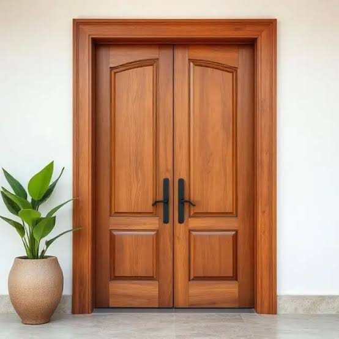
Elegant Wooden Double Door with Arched Panels
Crafted from premium solid teak wood, this double door features raised rectangular panels and graceful arched detailing near the top. The natural finish highlights the wood’s rich grain, while sleek black handles add a modern contrast. Framed with matching trim, it offers durability, timeless style, and a welcoming entrance for any home.
₹50,000 ₹45,000
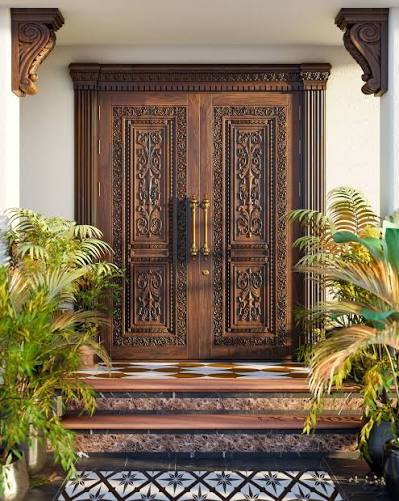
Ornate Wooden Gateway
This grand double door is crafted from solid wood, its surface richly adorned with intricate carvings that speak of traditional artistry. The natural grain of the timber adds warmth and depth, making the entrance both inviting and majestic. Its sheer presence conveys strength and permanence, marking it as a true centerpiece of the façade. It radiates timeless charm and shine.
₹70,000 ₹63,000
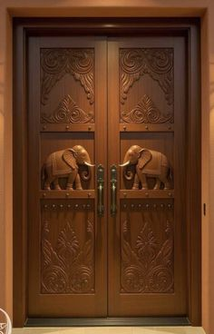
Elephant Harmony Wooden Doors
This magnificent double door is carved from solid wood, featuring inward‑facing elephants with raised trunks as its centerpiece. The detailed craftsmanship blends floral and geometric motifs around the elephants, symbolizing strength, wisdom, and prosperity. Metallic vertical handles at the center add a modern touch to the traditional artistry, making the doorway both functional and ornamental.
₹66,000 ₹64,000
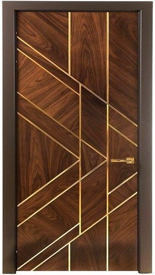
Golden Geometry Wooden Door
This striking door is crafted from rich dark wood, its surface enhanced by angular golden metallic inlays that form bold geometric patterns. The intersecting lines create a sense of movement and modern elegance, while the natural wood grain adds warmth and depth. A darker frame surrounds the design, grounding the composition and highlighting the contrast between wood and metal.
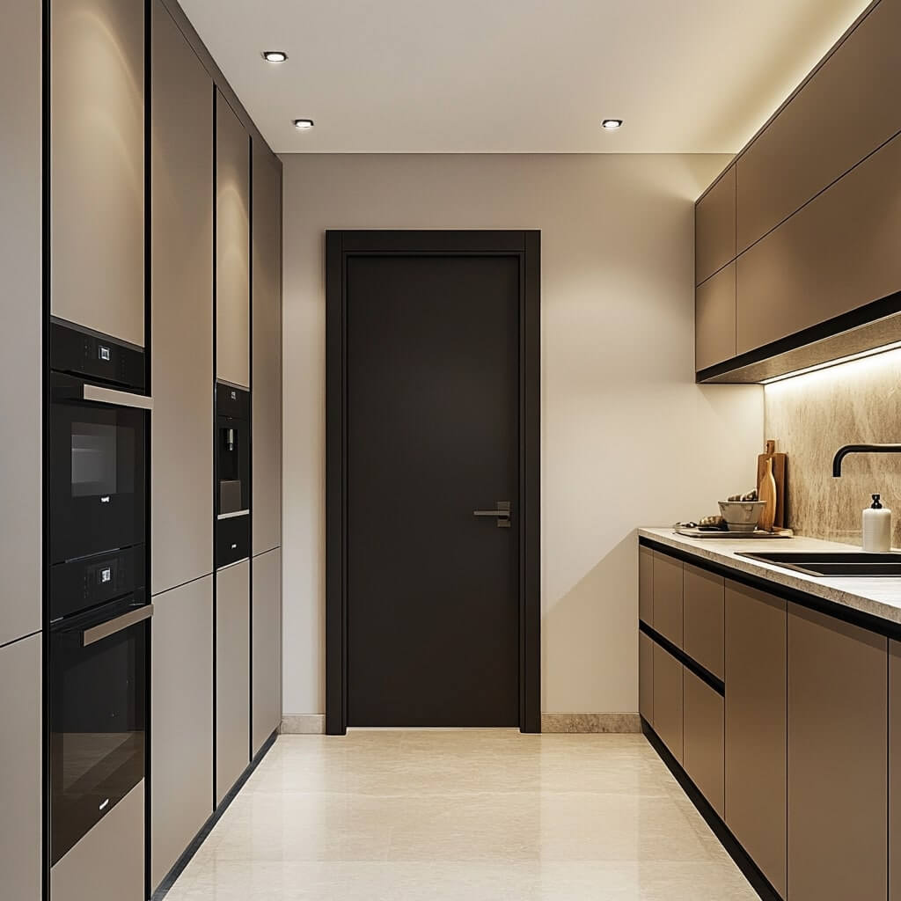
Modern Minimalist Door
This sleek door is crafted in a deep, dark finish that complements the surrounding cabinetry. Its clean, flat surface emphasizes simplicity, while the subtle frame adds definition without distraction. The metallic handle provides a refined accent, blending seamlessly with the contemporary kitchen design.
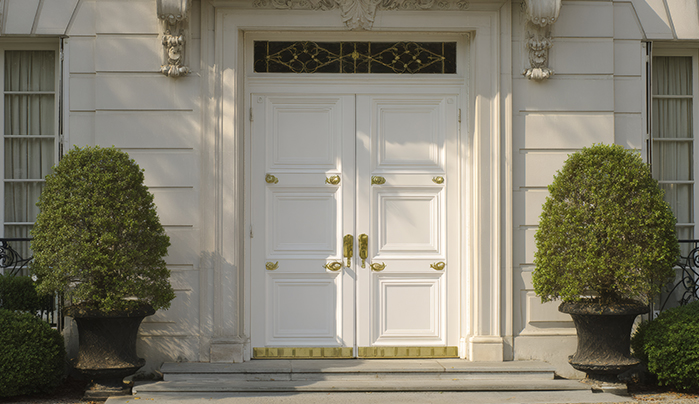
Regal White & Gold Entrance
This grand double door is finished in pristine white, accented with ornate golden handles and decorative gold detailing that exudes luxury. Above the doorway, a rectangular transom window with a golden lattice design adds refinement and symmetry. The frame enhances the classical architectural style.
₹1,50,000 ₹1,35000
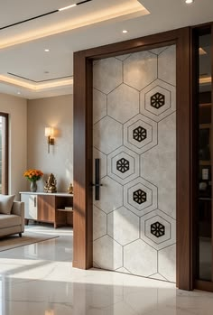
HexaBloom Wooden Door
This distinctive door features a bold hexagonal pattern, with select panels adorned by intricate black floral and star‑like motifs that add artistic flair. The warm wooden frame provides structure and balance, while the geometric design introduces a modern yet timeless appeal. Its placement within a softly lit interior enhances the visual impact, making the door both functional and decorative.
₹1,45,000 ₹1,24,000
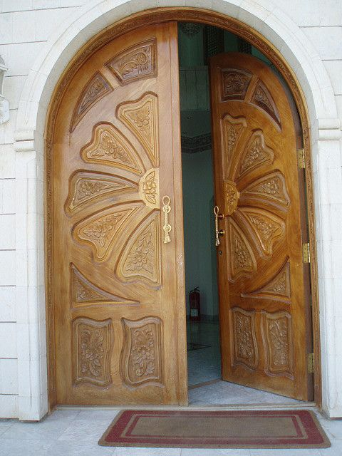
Floral Majesty Wooden Arch Door
This grand double door is carved from solid wood, its panels adorned with intricate floral and geometric patterns that mirror across both sides. The arched frame enhances its elegance, while the craftsmanship reflects cultural artistry and timeless design. Light stone surrounds the doorway, providing a refined contrast to the rich wood tones.
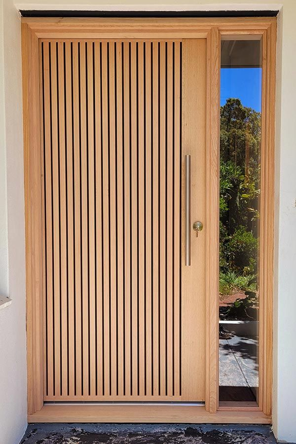
Linear Elegance Wooden Door
This contemporary door is crafted from light‑toned wood, its vertical slats creating a clean and symmetrical design. A narrow glass panel on the side introduces natural light and a view of greenery, softening the structure with openness. The sleek metal handle adds a refined accent, balancing modern utility with aesthetic appeal.
₹1,10,000 ₹95,000
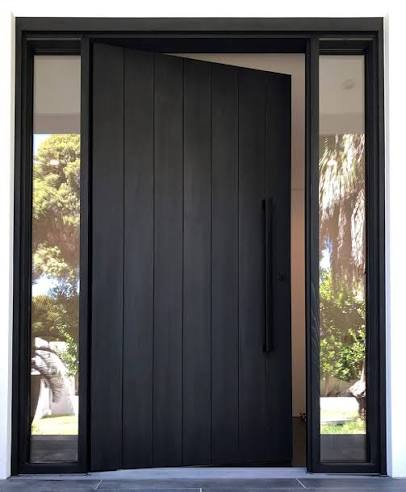
Vertical Grace Wooden Door
This contemporary front door is designed with dark wood panels arranged in a vertical layout, emphasizing clean lines and symmetry. Flanked by slim glass panels on either side, it allows natural light to filter through while offering a view of the outdoors. The tall, streamlined handle adds a touch of modern sophistication, blending seamlessly with the minimalist aesthetic.
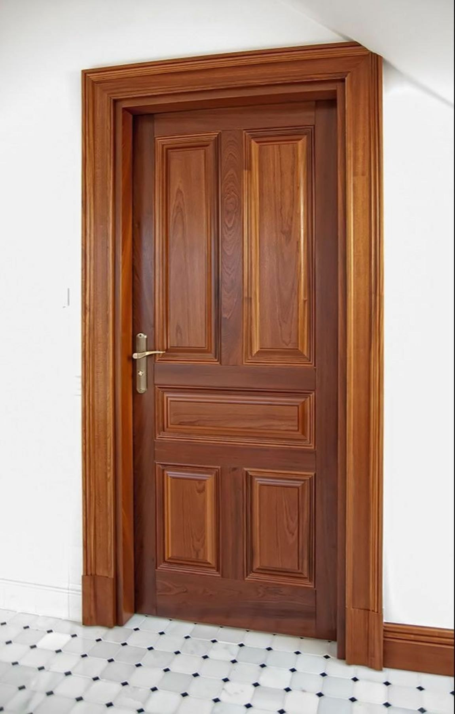
Classic Brown Attic Door
This door is crafted from rich brown wood, its detailed paneling adding depth and character to the design. A brass‑colored handle provides a warm metallic accent, complementing the natural tones of the frame. Set against white walls and a patterned tile floor, the door stands out as a focal point in the space. Positioned beneath a slanted ceiling, it suggests placement in an attic or upper floor, blending traditional craftsmanship with a modern setting.
₹55,000 ₹39,000
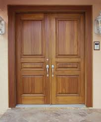
Twin Harmony Wooden Doors
This pair of natural‑finished wooden double doors features clean rectangular paneling that highlights balance and symmetry. Each door is fitted with a metallic handle and keyhole, blending utility with understated elegance. Framed by a light‑colored wall and accompanied by wall‑mounted fixtures, the entrance exudes a welcoming yet refined presence. The tiled flooring in front adds structure and contrast, completing the doorway’s polished look.
WINDOWS
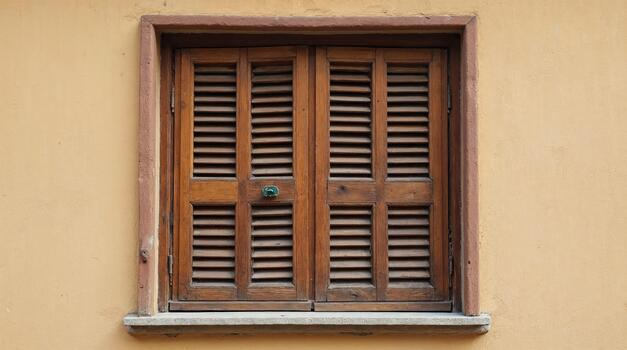
Twin Harmony Wooden Windows
This pair of natural‑finished wooden windows features clean rectangular paneling and metallic handles, blending utility with understated elegance. Framed by a light‑colored wall and accompanied by fixtures, the design exudes balance and refinement.
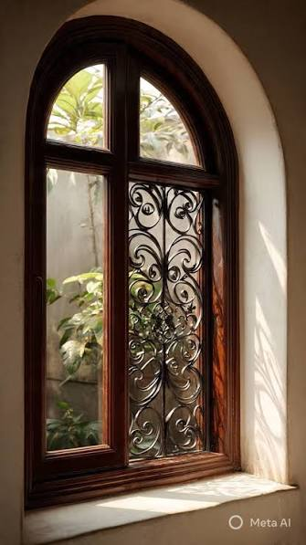
Classic Brown Attic Window
Crafted from rich brown wood with detailed paneling, this window adds depth and character to the space. A brass‑colored handle complements the warm tones, while its placement beneath a slanted ceiling suggests an attic or upper floor setting.
₹17,000 ₹14,000
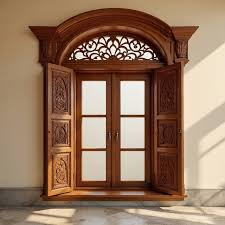
Ventura Shutter Window
This traditional wooden window has two shutter panels with horizontal slats, allowing ventilation while maintaining privacy. The reddish‑brown frame contrasts beautifully with the warm yellow wall, reflecting rustic charm.
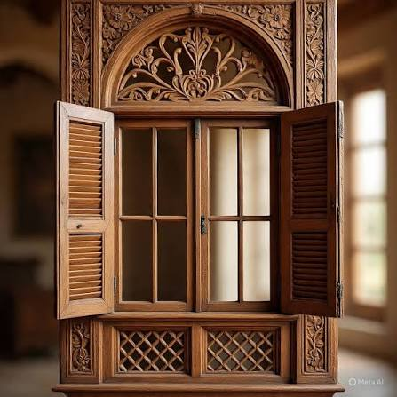
Arched Elegance Window
An arched wooden frame with decorative wrought iron detailing creates a refined focal point. Sunlight streaming through highlights the craftsmanship,while greenery outside adds natural beauty to the design.Elegant design.
₹10,000 ₹7,000
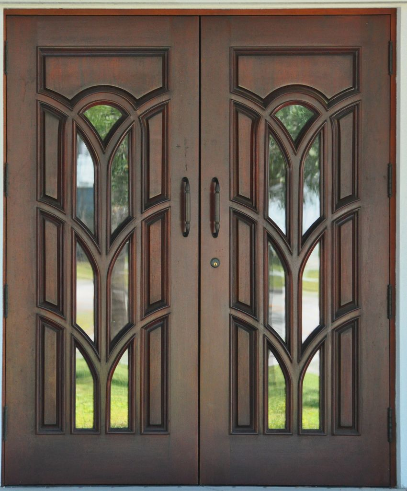
Carved Heritage Window
Intricately carved shutters frame frosted glass panels, crowned by an ornate arch with latticework. The artistry showcases traditional craftsmanship, balancing elegance with function.
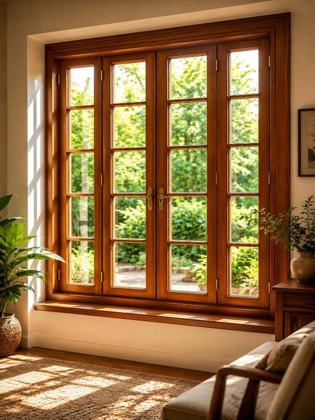
Floral Scrollwork Window
This wooden frame features elaborate floral and scrollwork carvings at the top, with lattice‑style woodwork below. Open shutters reveal divided glass panes, blending artistry with practicality.
₹17,000 ₹16,000
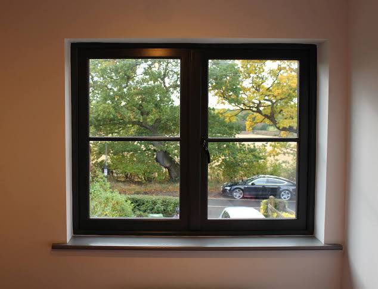
Autumn View Window
This rectangular window with a dark frame opens to a serene outdoor scene of green and yellow trees, marking the early autumn season. A central handle adds functionality, while the view of parked cars and a quiet road below connects the indoors to a suburban landscape. The design balances simplicity with a natural outlook.
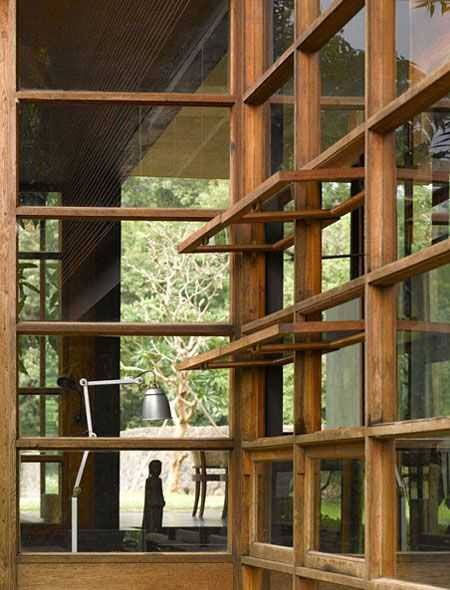
Wood‑Framed Glass Wall Window
Large glass panels framed with wooden beams create a modern architectural statement. The transparency allows interior elements like a desk lamp and chair to blend with reflections of greenery outside. The interplay of natural materials and geometric precision makes this window both functional and artistic.
₹35,000 ₹27,000
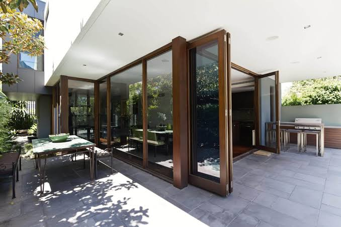
Folding Patio Glass windows
These expansive folding glass doors with wooden frames seamlessly connect indoor living space to an outdoor patio. The design emphasizes openness, natural light, and integration with greenery. Together, the doors create a fluid transition between dining, relaxation, and entertainment areas.
₹50,000 ₹42,000
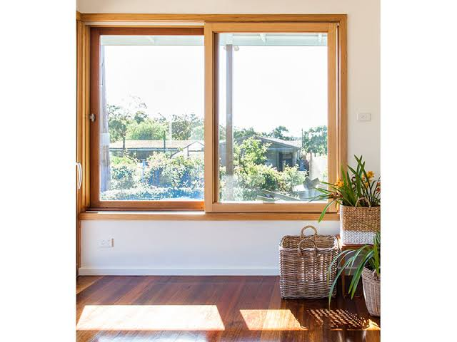
Garden Glow Sliding Window
A large wooden‑framed window with two glass panels, one sliding, offers a clear view of a lush garden. Sunlight streams through, illuminating polished wooden floors and woven baskets inside. The design enhances tranquility, blending indoor comfort with outdoor vibrancy.
₹5,000 ₹3,500
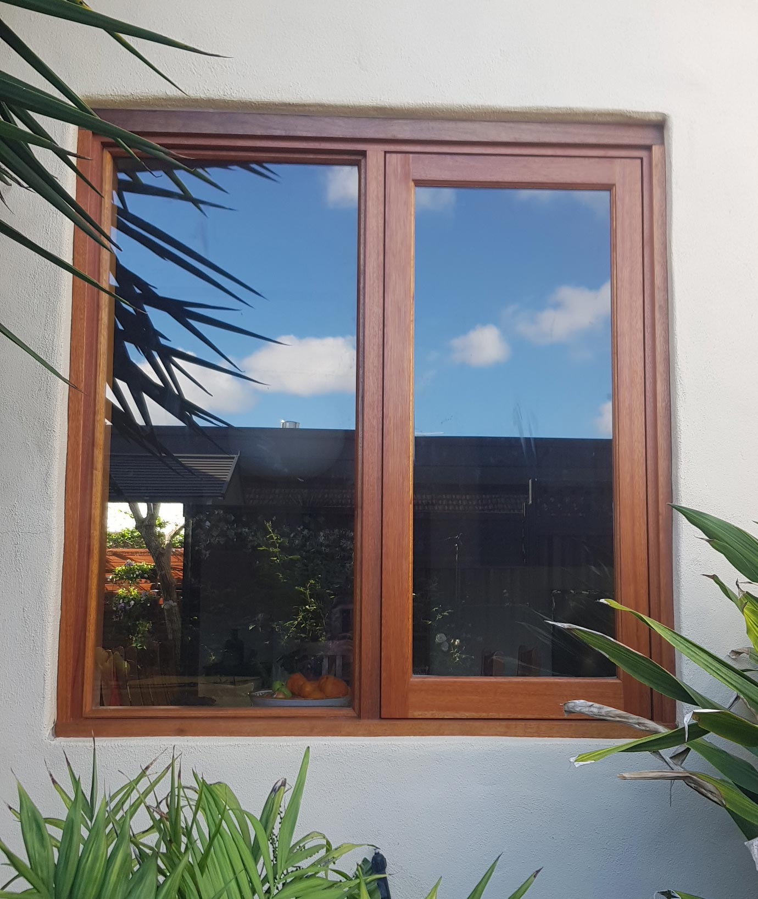
Sky Reflection Window
This wooden‑framed window captures both interior and exterior worlds. One pane reflects a vivid blue sky with scattered clouds, while the other reveals indoor details like a fruit bowl and plants. Surrounded by greenery, the layered reflections create a dynamic visual effect.
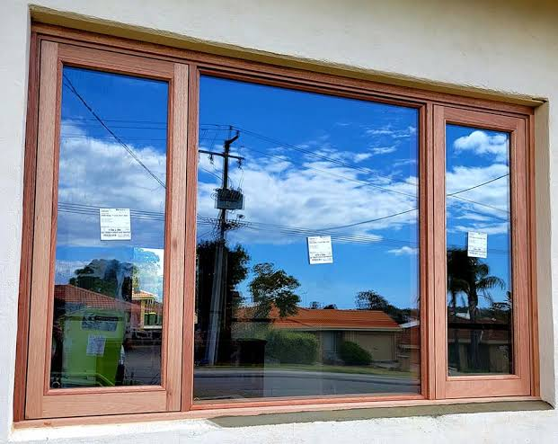
Panorama Reflection Window
A wide rectangular window framed in reddish‑brown wood features three glass panels. The reflective surface vividly mirrors rooftops, trees, electrical lines, and a bright sky, showcasing clarity and craftsmanship. Installed in a beige wall, it balances modern design with environmental connection.
₹5,600 ₹5,500
CHAIRS/TABLES
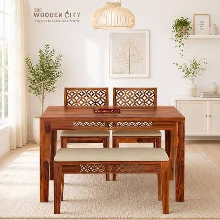
Lattice Charm Dining Set
This polished wooden dining table is paired with two lattice‑back chairs and a cushioned bench, creating a cozy yet elegant setup. A woven pendant light above adds warmth, while framed artwork and natural light from the window enhance the luxurious yet minimalist ambiance.
₹52,000 ₹47,000
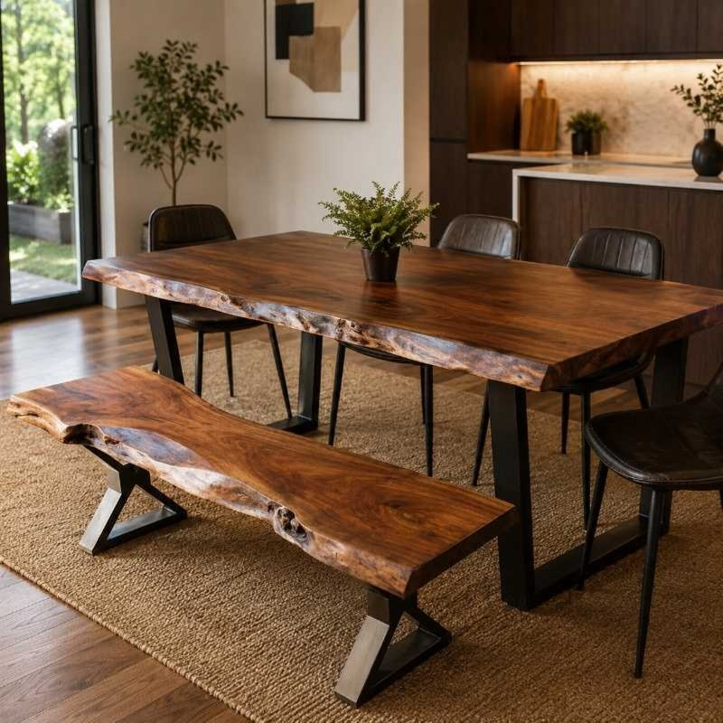
Rustic Edge Dining Ensemble
A live‑edge wooden table and bench with angular black metal legs bring rustic charm into a modern setting. Surrounded by leather chairs, the dining area blends natural textures with industrial design. The greenery outside and plants inside soften the bold aesthetic.
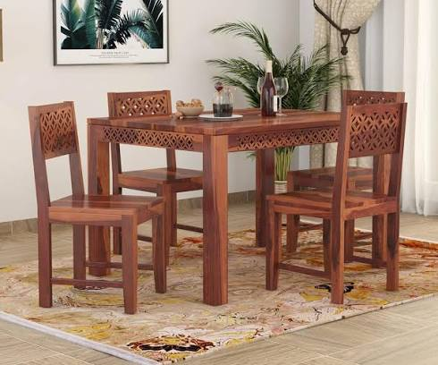
Carved Elegance Dining Set
This rectangular wooden table with four intricately carved chairs highlights craftsmanship and tradition. Positioned on a floral rug with wine and glasses atop, the set radiates coziness. Tropical leaf artwork and tied‑back curtains complete the inviting atmosphere.
₹56,000 ₹53,000
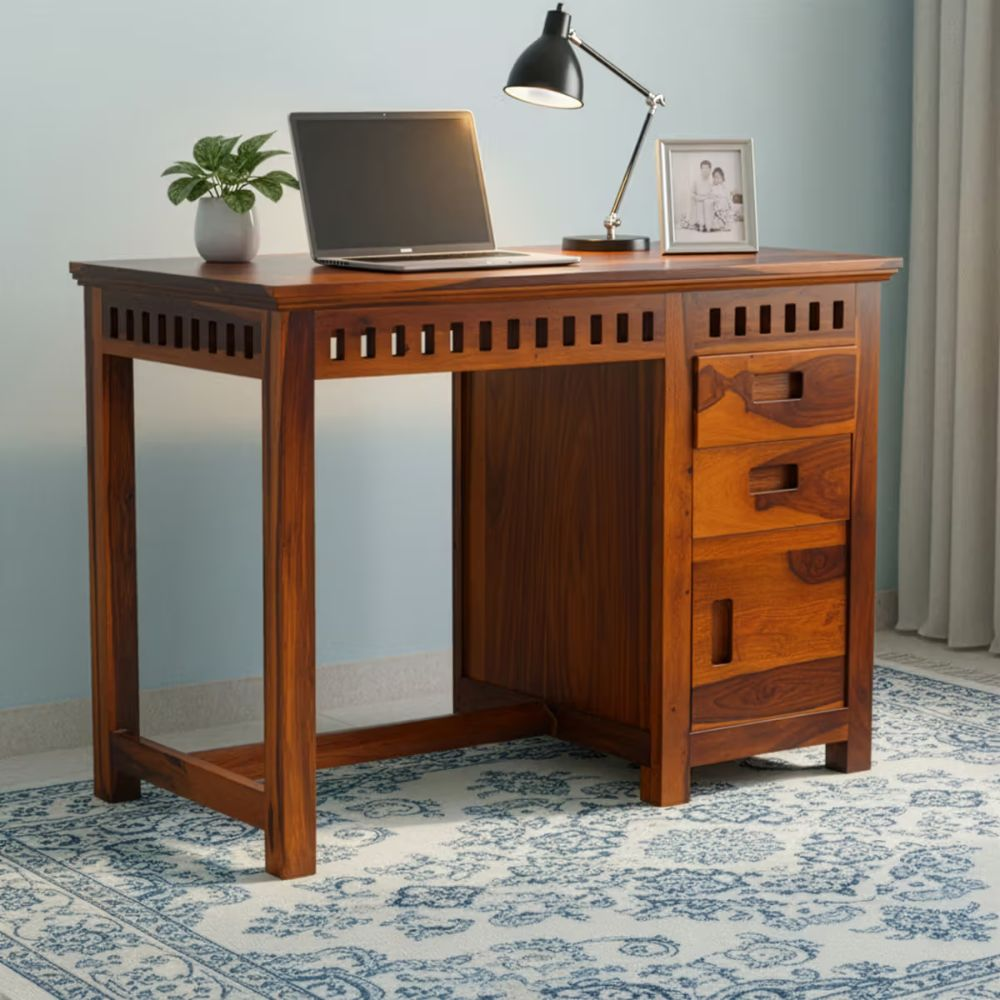
Classic Work Desk
A rich brown wooden desk with three drawers and decorative cutouts combines function with style. A laptop, lamp, and framed photo sit neatly on top, while the patterned rug and light blue wall create a balanced workspace that feels both modern and natural.
₹30,000 ₹23,000
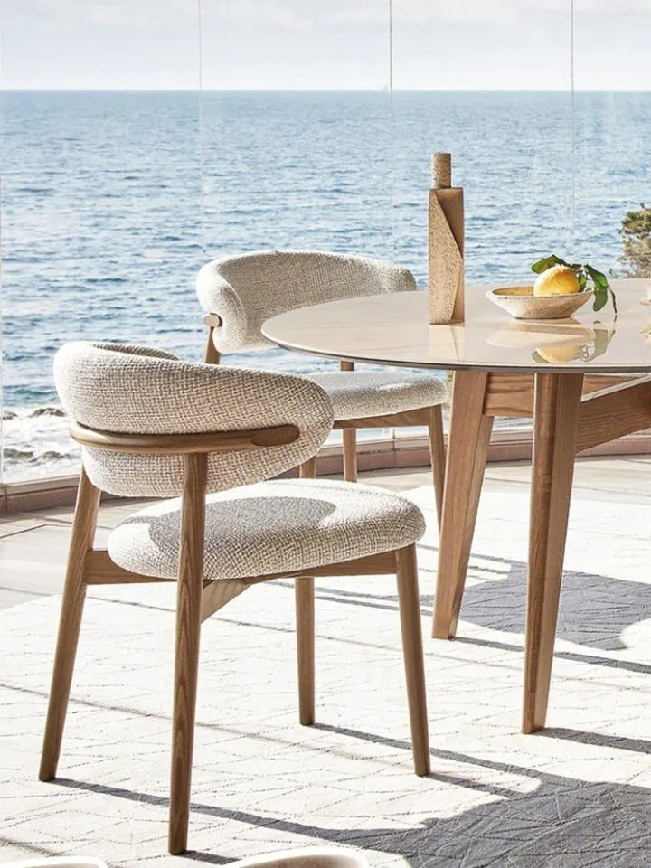
Coastal Serenity Dining Set
A round wooden table with upholstered beige chairs overlooks a stunning ocean view through floor‑to‑ceiling windows. Minimalist decor—a wooden bottle and a bowl of lemons—emphasizes simplicity, airy atmosphere.
₹37,000 ₹36,000
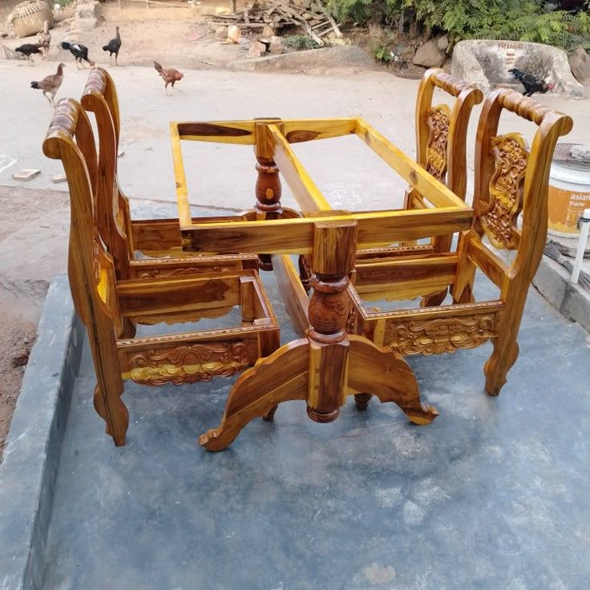
Rustic Craft Outdoor Set
Intricately carved wooden chairs and a table frame showcase traditional artistry in a rustic outdoor setting. Though the table lacks a top, the craftsmanship is evident in the ornate designs. The rural backdrop adds authenticity to the handcrafted furniture.
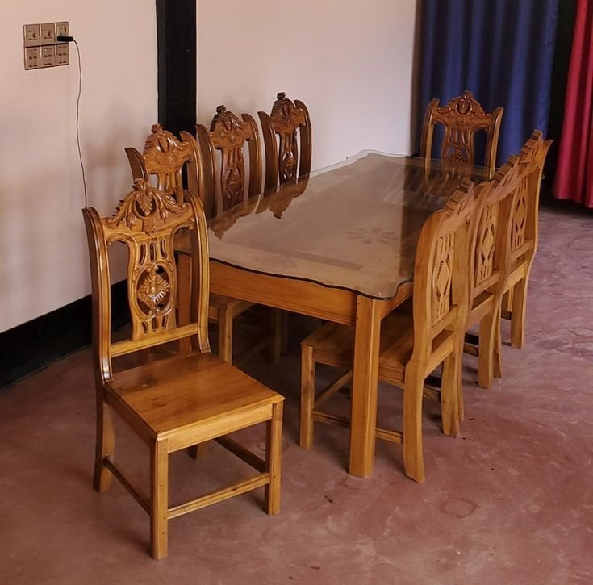
Glass‑Top Heritage Dining Set
A rectangular wooden table with a decorative glass top is surrounded by eight carved chairs featuring floral and geometric motifs. The reddish floor and colorful curtains highlight the traditional elegance, blending functionality with artistry.
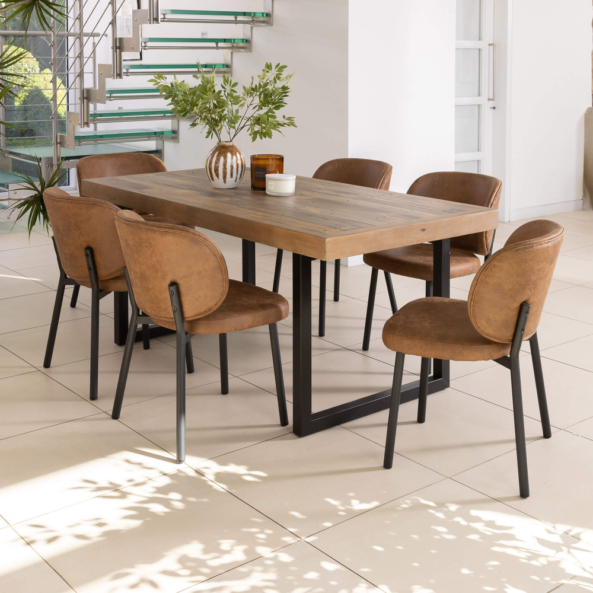
Modern Contrast Dining Set
A thick wooden tabletop with black metal legs anchors this contemporary dining area. Six upholstered chairs with rounded backs add comfort, while decorative vases and candles on the table enhance sophistication. Glass stairs in the background elevate the modern vibe
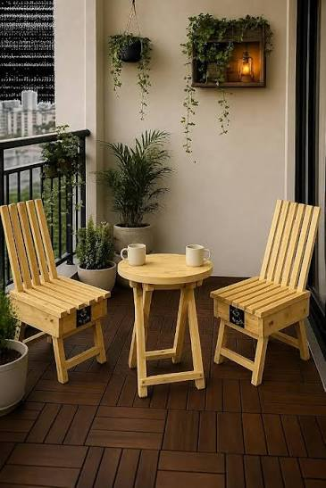
Balcony Retreat Set
Two wooden chairs and a round table sit atop interlocking wooden tiles, surrounded by lush potted plants. White mugs on the table and hanging vines nearby create a cozy, nature‑infused balcony retreat perfect for relaxation.
₹11,500 ₹10,000
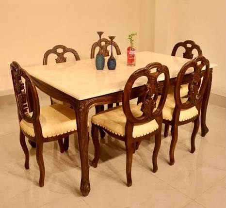
Marble Grace Dining Set
This ornate dining table with a polished stone top is paired with six carved wooden chairs featuring cushioned seats. Decorative vases and plants add charm, while curved legs and detailed craftsmanship reflect a classic, vintage style.
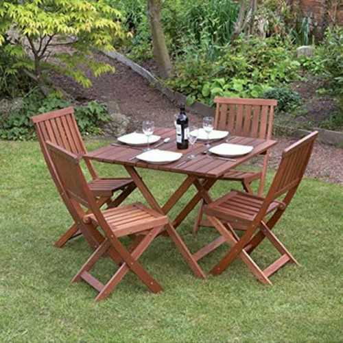
Garden Gathering Set
A square wooden table with four matching chairs sits on a grassy lawn, set with plates, glasses, and wine. Surrounded by shrubs and a stone border, the outdoor arrangement creates a welcoming space for social meals in a natural setting.
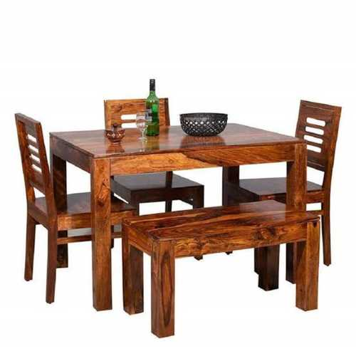
Rustic Blend Dining Set
A square wooden table with three chairs and a bench highlights polished wood grain and a rich brown finish. A wine bottle, glass, and decorative bowl add character, blending rustic craftsmanship with modern simplicity.